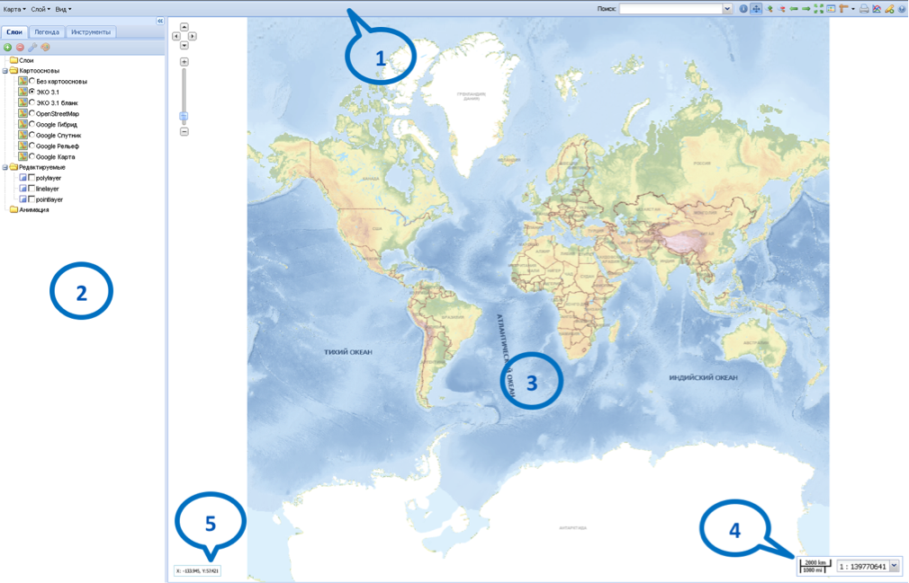

Интерфейс OceanViewer имеет следующий вид:
Он состоит из пяти частей:
1 - панель главного меню - содержит меню Карта, Слой и Вид в левой части панели, а также окно Поиск и кнопки управления в правой части панели.
2 - боковая панель задач – содержит закладки Слои, Легенда и Инструменты.
3 - рабочее окно карты – отображает загруженную картографическую основу и слои карты (проект пользователя).
4 - панель отображения и регулирования масштаба.
5 - панель координат курсора.
Граница между боковой панелью задач и рабочим окном карты является подвижной. Для удобства можно менять размеры этих окон или сворачивать боковую панель задач полностью (см. Боковая панель задач).